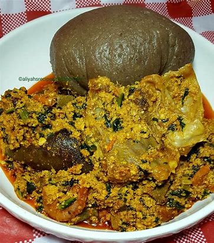
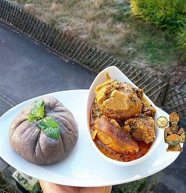

.jpeg)
.jpeg)

The name of my favorite meal is Amala and Ewedu with Gbegiri
| Cup pumpkin seeds | Pounds cubed beef stew meat | salt to taste | cup peanut oil | large tomatoes, chopped | small onion, chopped | habanero peppers, seeded and minced | pounds fresh shrimp, peeled and deveined | ounces tomato sauce | cups water | tablespoons tomato paste | pound fresh spinach, washed and chopped |
|---|---|---|---|---|---|---|---|---|---|---|---|
| 3.4 | 1.5 | As you desire | 0.5 | 2 | 1 | 2 | 2 | 18 | 1.5 | 3 | 1 |
Here is the steps to prepare your delicious Egusi soup👇
Place pumpkin seeds in a blender; blend until mixture is powdery, 30 to 40 seconds. Set aside.
Cut beef into bite-sized cubes; season with salt.
Heat oil in a large pot over medium-high heat. Cook beef in hot oil until brown but not cooked through, 3 to 5 minutes.
Place tomatoes, onion, and peppers in a blender; blend until smooth, about 30 seconds. Stir tomato mixture into beef; reduce heat to medium-low and cover. Cook until meat is tender, 40 to 50 minutes.
Add shrimp, tomato sauce, water, and tomato paste; simmer for 10 minutes.
Stir in spinach and powdered pumpkin seeds. Continue simmering for 10 more minutes.
My Amala & Egusi soup images